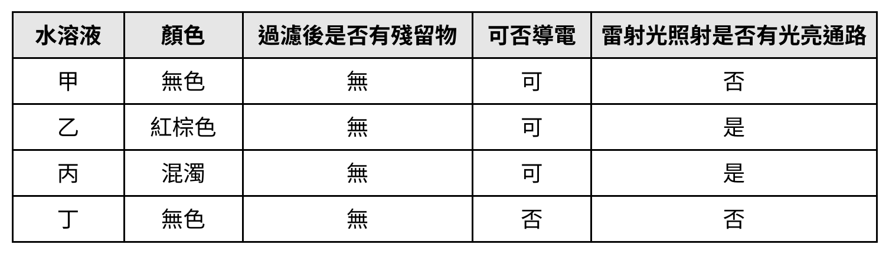

基礎題
下列敘述何者錯誤？
- (A) 合金常是一種固態溶液
- (B) 玻璃及合金兩者皆可視為溶液
- (C) 空氣可視為氣態溶液
- (D) 任何氣體均可依任意比例混合成為氣態溶液
- (E) 所謂溶液是指液態的均勻混合物
看答案與詳解
答案：(E)
(A) ✔ 合金是金屬均勻互溶的固態溶液。
(B) ✔ 玻璃是多種矽酸鹽均勻混合的固態溶液，合金亦然。
(C) ✔ 空氣是以 N2 為溶劑的氣態溶液。
(D) ✔ 氣體分子間距大，彼此不反應的氣體可以任意比例均勻混合（會反應的如 NH3 與 HCl 則不行）。
(E) ✘ 溶液不限液態；固態溶液（合金）、氣態溶液（空氣）都算。
〔易錯〕把「溶液」只當成液體
下列哪一組物質全部都屬於真溶液？
- (A) 糖水、碘酒、黃銅
- (B) 牛奶、食鹽水、空氣
- (C) 泥水、汽水、酒精水溶液
- (D) 豆漿、18K 金、食醋
- (E) 蒸餾水、碘酒、空氣
看答案與詳解
答案：(A)
(A) ✔ 糖水、碘酒是液態溶液，黃銅（銅鋅合金）是固態溶液。
(B) ✘ 牛奶是膠體溶液，不是真溶液。
(C) ✘ 泥水是懸浮液。
(D) ✘ 豆漿是膠體溶液，不是真溶液。
(E) ✘ 蒸餾水是純物質，不是混合物。
下列對溶液的敘述，哪些正確？（應選 2 項）（多選）
- (A) 食鹽水溶液具導電性，是電解質溶液
- (B) 溶液是由多種純物質所構成的均勻化合物
- (C) 空氣中含有氮、氧、氬、二氧化碳等多種氣體，可視為氣態溶液
- (D) 兩物質形成溶液時，可以任意比例混合
- (E) 將鐵粉加入水中，攪拌後所得的混合物可稱為液態溶液
看答案與詳解
答案：(A)(C)
(B) ✘ 溶液是均勻「混合物」，不是化合物。
(C) ✔ 空氣為均勻的氣態混合物，屬氣態溶液。
(D) ✘ 多數溶質有溶解度限制，不能以任意比例互溶。
(E) ✘ 鐵粉不溶於水，得到的是不均勻的懸浮混合物。
以下物質哪些屬於溶液？（應選 3 項）（多選）
- (A) 泥巴水
- (B) 空氣
- (C) 24K 金
- (D) 青銅
- (E) 綠茶
看答案與詳解
答案：(B)(D)(E)
(A) ✘ 泥巴水靜置會沉澱，是不均勻的懸浮液。
(B) ✔ 空氣是 N2、O2 等的均勻混合，屬氣態溶液。
(C) ✘ 24K 金純度 99.9% 以上，視為純物質（元素 Au）。
(D) ✔ 青銅是銅錫合金，屬固態溶液。
(E) ✔ 綠茶（過濾後）是均勻透明的水溶液。
判斷小技巧：靜置後會不會沉澱、分層？會 → 不是溶液；看起來均勻透明、不會沉澱 → 溶液。
〔易錯〕合金、空氣也是溶液；溶液不一定是液體。
電解質溶於水能導電的理由為何？
- (A) 電解質一定是離子化合物
- (B) 電解質未溶於水前就能導電
- (C) 電解質一定不是分子化合物
- (D) 電解質通電時能解離
- (E) 電解質溶於水會解離出離子
看答案與詳解
答案：(E)
(B) ✘ 固態 NaCl 不導電，溶於水或熔融後才導電。
(D) ✘ 解離是溶於水時發生的，不是通電才解離。
(E) ✔ 電解質溶於水解離出可自由移動的陰、陽離子，才能導電。
〔易錯〕「通電才解離」是因果顛倒
下列物質溶於水後，哪一個水溶液幾乎不導電？
- (A) KNO3
- (B) HCl
- (C) C12H22O11（蔗糖）
- (D) NaOH
- (E) CH3COOH
看答案與詳解
答案：(C)
蔗糖是非電解質，在水中以分子形式存在，不解離 → 幾乎不導電。
KNO3、HCl、NaOH 是強電解質；CH3COOH 是弱電解質，仍可導電（導電性較差）。
下列哪些物質具有導電性？（多選）
- (A) C2H5OH(aq)
- (B) HNO3(aq)
- (C) CO2(g)
- (D) HCl(aq)
- (E) NaCl(aq)
看答案與詳解
答案：(B)(D)(E)
(A) ✘ 乙醇為非電解質，溶於水不解離。
(B) ✔ 硝酸為強酸，完全解離出 H+ 與 NO3−。
(C) ✘ 氣態 CO2 無離子，不導電。
(D) ✔ 鹽酸為強酸。
(E) ✔ 食鹽水含 Na+、Cl−。
〔易錯〕CO2 溶於水才微弱導電，氣態本身不導電
下列關於電解質的敘述，哪些錯誤？（應選 2 項）（多選）
- (A) 電解質溶於水中可解離出離子
- (B) 溶液中的陰離子能單獨存在
- (C) 溶液中的陽離子數與陰離子數必相等
- (D) 溶液必定成電中性
- (E) 溶液中陽離子總電量必等於陰離子總電量
看答案與詳解
答案：(B)(C)
(B) 錯誤：溶液必為電中性，陰離子不能單獨存在，必有陽離子同時存在。
(C) 錯誤：離子數不一定相等，例如 CaCl2 溶液中 Cl− 數為 Ca2+ 的 2 倍。
(D)(E) 正確：溶液呈電中性，陽離子總電量＝陰離子總電量。
本題選錯誤者，故選 (B)(C)。
1881 年起，瑞典人阿瑞尼斯進行電解質導電情形的研究，於 1884 年提出「電解質解離說」。下列各項敘述，何者錯誤？
- (A) 食鹽溶液可導電，是因在水溶液中可解離出離子
- (B) 在食鹽溶液中通入直流電時，鈉離子會往負極移動
- (C) 蔗糖溶液不可導電，其為非電解質
- (D) 電解質解離出的陰、陽離子個數相等
- (E) 食鹽溶液之陰、陽離子的總帶電量相等
看答案與詳解
答案：(D)
(A)(B)(C)(E) 皆正確；陽離子 Na+ 往負極移動。
下列物質的粒子大小比較，何者正確？(甲) 膠體溶液中的膠體粒子、(乙) 真溶液中的溶質粒子、(丙) 懸浮液中的懸浮粒子
- (A) 甲＞乙＞丙
- (B) 甲＞丙＞乙
- (C) 乙＞甲＞丙
- (D) 丙＞乙＞甲
- (E) 丙＞甲＞乙
看答案與詳解
答案：(E)
故 丙（懸浮）＞ 甲（膠體）＞ 乙（真溶液） → (E) ✔，其餘 ✘。
〔易錯〕膠體介於溶液與懸浮液之間。
膠體溶液中之分散質，其粒子直徑約在下列哪一個範圍？
- (A) 10−9～10−8 m
- (B) 10−9～10−6 m
- (C) 10−6～10−5 m
- (D) 10−5～10−4 m
- (E) 10−4～10−3 m
看答案與詳解
答案：(B)
小於 10−9 m 為真溶液；大於 10−6 m 為懸浮液。
下列哪些會產生廷得耳效應？（應選 2 項）（多選）
- (A) 飽和食鹽水
- (B) 牛奶
- (C) 米酒
- (D) 霧
- (E) 食用醋
看答案與詳解
答案：(B)(D)
(B) 牛奶（乳化膠體）✔；(D) 霧（小水滴分散於空氣的氣溶膠）✔。
(A) 食鹽水、(C) 米酒（乙醇水溶液）、(E) 食用醋（醋酸水溶液）都是真溶液 ✘。
〔易錯〕透明的溶液（即使是飽和溶液）也不是膠體。
水氣氤氳的迷霧森林中，可看見一束光徑，關於此現象的敘述，下列何者正確？
- (A) 森林中的雲霧，是一種液態溶液
- (B) 日光照射在純氧環境下，也可以產生類似的現象
- (C) 此現象為布朗運動
- (D) 雲霧會散射光線
- (E) 可以完全透光
看答案與詳解
答案：(D)
(A) ✘ 雲霧是以空氣為分散媒的膠體，不是液態溶液。
(B) ✘ 純氧中沒有膠體粒子，不會散射出光徑。
(C) ✘ 這是廷得耳效應；布朗運動是膠體粒子不規則的運動。
(E) ✘ 光被散射，無法完全透光。
下列有關溶液性質的敘述何者正確？
- (A) 廷得耳效應是因為分散媒散射光線造成
- (B) 膠體溶液的溶質可用普通濾紙分離
- (C) 膠體溶液的溶質靜置時會沉澱
- (D) 膠體溶液的分散質相當於真溶液的溶質
- (E) 真溶液溶質直徑約 1 nm～1000 nm
看答案與詳解
答案：(D)
(B) ✘ 膠體粒子可通過濾紙，無法用普通濾紙分離（要用半透膜）。
(C) ✘ 膠體靜置不沉澱，會沉澱的是懸浮液。
(D) ✔ 分散質對應溶質，分散媒對應溶劑。
(E) ✘ 1～1000 nm 是膠體粒子大小，真溶液溶質小於 1 nm。
〔易錯〕散射光線的是分散質，不是分散媒。
下列有關膠體溶液的敘述，何者正確？
- (A) 膠體溶液的分散質，直徑為 10−3～10−5 公尺
- (B) 光線通過膠體溶液，顯出一條光亮的通路，此即布朗運動
- (C) 膠體溶液是指水溶液，故分散媒只能是水
- (D) 已知溶液甲與乙分別為膠體溶液與真溶液，則可使用雷射筆照射溶液來判別
- (E) 生理食鹽水與咖啡牛奶皆為膠體溶液
看答案與詳解
答案：(D)
(A) ✘ 10−3～10−5 m 是毫米到 0.01 mm 等級，太大了，那是懸浮液甚至肉眼可見的顆粒。
(B) ✘ 光線通過膠體出現光亮通路叫「廷得耳效應」；布朗運動是膠體粒子被溶劑分子撞擊而不停地不規則運動，兩者不同。
(C) ✘ 分散媒可以是氣體（霧、煙）、固體（有色玻璃）或液體，不限於水。
(D) ✔ 雷射光照射膠體溶液會看到光路（廷得耳效應），真溶液看不到，可以用來區別。
(E) ✘ 生理食鹽水是 NaCl 的真溶液；咖啡牛奶才是膠體。
〔易錯〕廷得耳效應（光路）與布朗運動（粒子運動）不要混用
下列關於膠體溶液的敘述，何者正確？
- (A) 可利用過濾將膠體粒子與溶劑分開
- (B) 霧、空氣均為常見的膠體溶液
- (C) 溶質粒徑在 10−9～10−6 m 的粒子所構成的溶液，稱為膠體溶液
- (D) 陽光射入充滿灰塵的房間可見到一條發亮光帶，此為布朗運動
- (E) 硝酸鉛和碘化鉀水溶液混合，會產生黃色碘化鉛沉澱物，此為膠體溶液的凝聚現象
看答案與詳解
答案：(C)
(B) ✘：霧是膠體，空氣是真溶液。
(C) ✔：分散質粒徑約 1～1000 nm（10−9～10−6 m）者為膠體溶液。
(D) ✘：光束是廷得耳效應，不是布朗運動。
(E) ✘：Pb2+＋2I− → PbI2 是離子沉澱反應，不是膠體凝聚。
進階題
下列有五組化合物，哪一組的三種化合物水溶液均可導電，且全部都是分子化合物？
- (A) CO、NH4NO3、HClO3
- (B) C6H12O6、HCl、CH4
- (C) C2H5OH、H2S、NaOH
- (D) CH3COOH、CO2、NH3
- (E) KCl、H2SO4、MgO
看答案與詳解
答案：(D)
(B) ✘ 葡萄糖、CH4 水溶液不導電。
(C) ✘ NaOH 是離子化合物；乙醇是非電解質。
(D) ✔ 都是分子化合物：CH3COOH 部分解離；CO2 溶於水生成 H2CO3；NH3 溶於水生成 NH4+、OH−，水溶液都能導電。
(E) ✘ KCl、MgO 是離子化合物。
某水溶液中只含有 Na+、Mg2+、Cl−、SO42− 四種離子，其中 [Na+]＝0.30 M、[Mg2+]＝0.20 M、[Cl−]＝0.10 M，則 [SO42−] 為多少 M？
- (A) 0.10
- (B) 0.20
- (C) 0.30
- (D) 0.40
- (E) 0.60
看答案與詳解
答案：(C)
0.30×1＋0.20×2＝0.10×1＋[SO42−]×2
0.70＝0.10＋2[SO42−] → [SO42−]＝0.30 M
〔易錯〕比的是「電量」不是「離子個數」，二價離子要乘 2。
今有四杯濃度極稀薄的溶液，分別為葡萄糖水、食鹽水、咖啡和氫氧化鐵溶液，四杯溶液的性質如附表。下列哪一個選項正確？

- (A) 甲為葡萄糖水，且為真溶液
- (B) 乙和丙在雷射光照射下顯現一光亮通路，此為布朗運動
- (C) 丙為咖啡，且為懸浮液
- (D) 丁為食鹽水，且為非電解質
- (E) 乙為氫氧化鐵溶液，且為膠體溶液
看答案與詳解
答案：(E)
乙：紅棕色、有廷得耳效應 → 氫氧化鐵膠體。
丙：混濁、有廷得耳效應、過濾無沉澱 → 咖啡（膠體）。
丁：無色、不導電 → 葡萄糖水。
(A) ✘ 甲是食鹽水。(B) ✘ 光亮通路是廷得耳效應，不是布朗運動。(C) ✘ 過濾後沒有沉澱，是膠體不是懸浮液。(D) ✘ 丁是葡萄糖水（非電解質），不是食鹽水。(E) ✔
將豆漿稀釋後的膠體溶液作了以下實驗，你覺得何者可能為實驗結果？
- (A) 通電後可以看到類似豆花的結塊
- (B) 使用濾紙可過濾出蛋白質
- (C) 以雷射筆照射可觀察到布朗運動
- (D) 加入砂糖可看到類似豆花的結塊
- (E) 久置後可以在杯底看到類似豆花的結塊
看答案與詳解
答案：(A)
(B) ✘：膠體粒子可通過濾紙。
(C) ✘：雷射照射看到的是廷得耳效應；布朗運動需用超顯微鏡觀察。
(D) ✘：砂糖是非電解質，不能中和膠粒電荷使其凝聚（點豆花要加電解質如石膏、鹽滷）。
(E) ✘：膠體相當穩定，久置不會沉降。
下列有關膠體溶液的敘述，哪些正確？（多選）
- (A) 膠體粒子不斷受到分散媒分子不均勻的碰撞而做不規則的運動，稱為布朗運動
- (B) 膠體粒子帶有同性電荷而互相排斥，所以不容易凝聚沉降
- (C) 在豆漿中加入鹽滷（含 MgCl2）製作豆花，是利用電解質使膠體粒子凝聚
- (D) 膠體粒子無法通過濾紙，可用過濾法與分散媒分離
- (E) 廷得耳效應是膠體粒子吸收光線所造成
看答案與詳解
答案：(A)(B)(C)
(B) ✔ 同一種膠體粒子吸附同性電荷，互相排斥而穩定分散。
(C) ✔ 電解質的離子中和膠體粒子的電荷，使粒子聚集成大顆粒而凝聚。
(D) ✘ 膠體粒子（直徑約 10−9～10−6 m）可通過濾紙，不能用過濾分離。
(E) ✘ 廷得耳效應是膠體粒子「散射」光線。
下列有關溶液的敘述，哪些正確？（多選）
- (A) 真溶液不一定可以導電，但溶液一定呈電中性
- (B) 當光線照射真溶液或膠體溶液，只有膠體溶液可顯現出廷得耳效應
- (C) 溶液有一定的組成、一定的沸點
- (D) 膠體溶液可用濾紙過濾分離溶質與溶劑
- (E) 18K 金為固態溶液，其成分中的金為溶劑
看答案與詳解
答案：(A)(B)(E)
(B) ✔ 膠體粒子（1～1000 nm）會散射光，產生廷得耳效應；真溶液粒子太小不會。
(C) ✘ 溶液是混合物，組成可變，沸點隨濃度改變。
(D) ✘ 膠體粒子可穿過濾紙，無法用過濾分離（可用半透膜）。
(E) ✔ 18K 金含金 18/24＝75%，金最多為溶劑。
〔易錯〕膠體能過濾紙、不能過半透膜
大考／素養題
若不小心被玻璃割破手，可用 FeCl3 溶液應急止血。
(1) 請說明此應用的原理。
看答案與詳解
答案：血液是膠體溶液，FeCl3 解離出的離子中和膠體粒子的電荷，使其凝聚而止血
加入電解質 FeCl3，解離出的離子（尤其帶 3 個正電荷的 Fe3+）會中和膠體粒子的電荷，粒子失去互斥力而聚集沉降（膠體的凝聚），血液因此凝固，達到止血效果。
臺灣的國民飲料─珍珠奶茶，是由四種材料組成：糖、奶、茶湯和粉圓。而這裡的「奶」大部分都不是鮮奶或奶粉，而是奶精，其主要成分為以植物性油脂製得的氫化植物油，奶精比鮮奶和奶粉便宜得多，且較易保存不易變質；而粉圓的主要成分為澱粉；糖則大多使用果糖、蔗糖、黑糖或蜂蜜。下列敘述，何者正確？
- (A) 不含粉圓的奶茶為均勻混合物，在定壓時有固定的沸點
- (B) 不含粉圓的奶茶以雷射光照射，會有廷得耳效應
- (C) 果糖和蔗糖均為單醣，粉圓中的澱粉則為多醣
- (D) 奶精的成分為蛋白質，水解後可得胺基酸
- (E) 可用酒精將茶湯中的茶鹼和咖啡因萃取出來
看答案與詳解
答案：(B)
(A) ✘ 混合物沒有固定沸點（且奶茶屬膠體，不是真溶液）。
(B) ✔ 奶精的油脂微粒會散射光線，產生廷得耳效應。
(C) ✘ 果糖是單醣，蔗糖是雙醣（葡萄糖＋果糖）。
(D) ✘ 文中說明奶精主要成分是氫化植物油（油脂），不是蛋白質。
(E) ✘ 萃取劑必須與原溶劑不互溶；酒精與水互溶，無法把咖啡因從茶湯中萃取出來。
〔易錯〕蔗糖是雙醣；酒精與水互溶，不能當水溶液的萃取劑。
河流在出海口常堆積出三角洲，原因之一是河水中的黏土膠體粒子遇到海水後聚集沉降。下列哪一個現象的原理與此最相近？
- (A) 在豆漿中加入鹽滷製作豆花
- (B) 雷射筆照射稀牛奶時出現光亮的通路
- (C) 用濾紙過濾泥水
- (D) 蒸餾海水取得純水
- (E) 在顯微鏡下觀察到墨汁微粒不規則運動
看答案與詳解
答案：(A)
(A) ✔ 同為「電解質使膠體凝聚」。
(B) 廷得耳效應 (C) 過濾 (D) 蒸餾 (E) 布朗運動，原理都不同。
小奇有三杯液體：食鹽水、稀澱粉液、泥水。
(1) 只用一支雷射筆，如何分辨食鹽水與稀澱粉液？
(2) 三杯分別用濾紙過濾，哪一杯會在濾紙上留下明顯的殘渣？
(3) 三杯液體中分散粒子的大小，由小到大依序為何？
看答案與詳解
答案：(1) 出現光徑的是稀澱粉液 (2) 泥水 (3) 食鹽水＜稀澱粉液＜泥水
(2) 泥水是懸浮液，粒子大於濾紙孔隙，會留在濾紙上；真溶液與膠體溶液的粒子都能通過濾紙。
(3) 真溶液（＜10−9 m）＜膠體溶液（10−9～10−6 m）＜懸浮液（＞10−6 m）。